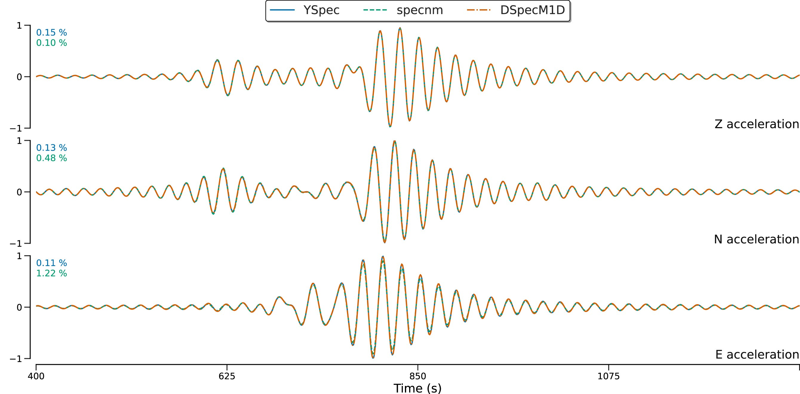

Paper workflows / ex3
EX3 · Attenuating broadband acceleration comparison
A broadband acceleration comparison across DSpecM1D, YSpec, MINEOS and SpecNM, with attenuation enabled in the parameter file.


Configuration
Uses data/params/ex3.txt and model data/models/prem.200, covering 0.1–55 mHz with a 240-minute time window.
Comparison inputs
YSpec, MINEOS and SpecNM comparison series are loaded from data/reference/.
Executable and outputs
cmake -S . -B build/release -DDSPECM1D_BUILD_BENCHMARKS=ON
cmake --build build/release --target ex3 --parallel 2
OMP_NUM_THREADS=2 ./build/release/bin/ex3The executable writes ex3_t.out and ex3_w.out to build/release/output/. A fresh build generates these files when the executable runs.
Plot command
Run from the repository root after producing the required output files:
DSPECM1D_BUILD_DIR=build/release python3 plotting/functions/ex3.pyScope and limits
This is the published Figure 4 case: attenuating PREM with an ocean layer. The article figure compares DSpecM1D, YSpec and specnm. The current ex3 parameters extend the calculation to 55 mHz and use a 49–50 mHz taper, while the paper figure uses a 51 mHz maximum and a 50–50.5 mHz upper taper.
New Figure 4 YSpecpp comparison · 20 October 2026
A new full-band comparison reports three-component acceleration differences over the full record and the paper’s 400–1300 s display interval, with the raw vertical spectrum shown separately. The publisher image above remains the original Figure 4. View the new plots, metrics, settings and provenance.